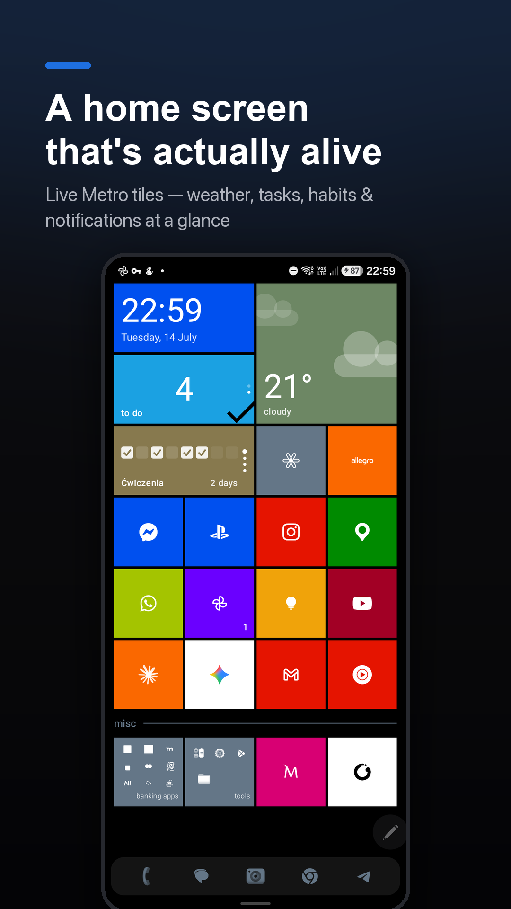
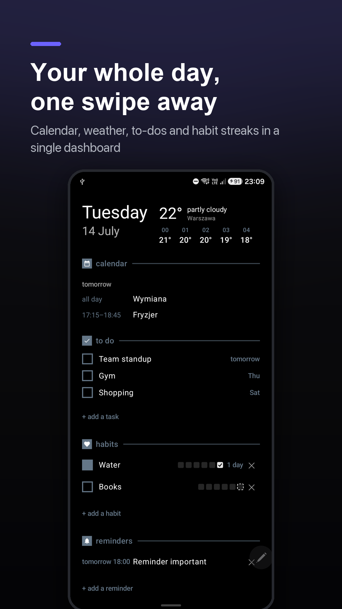
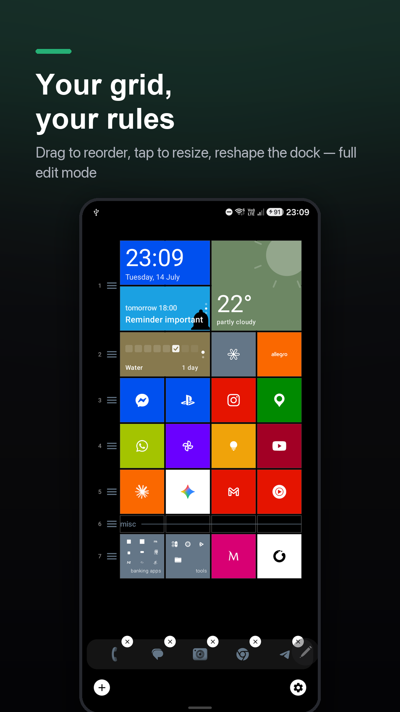
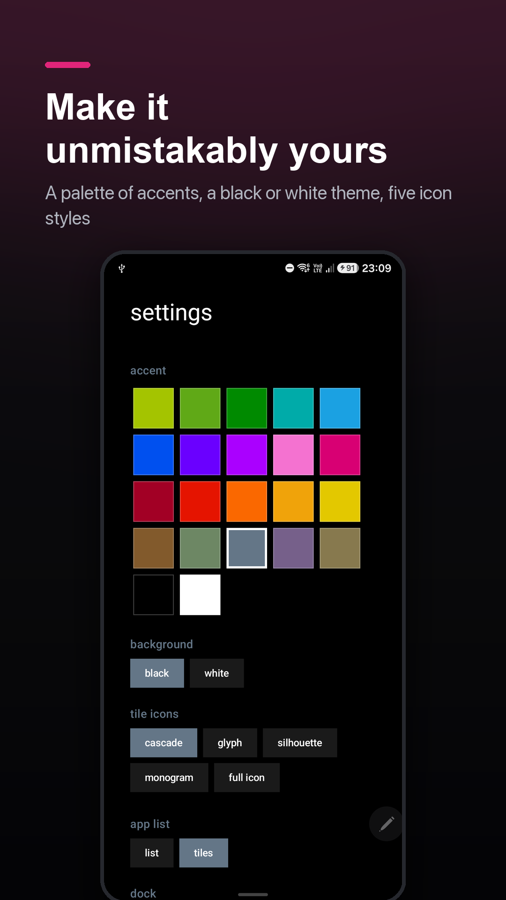
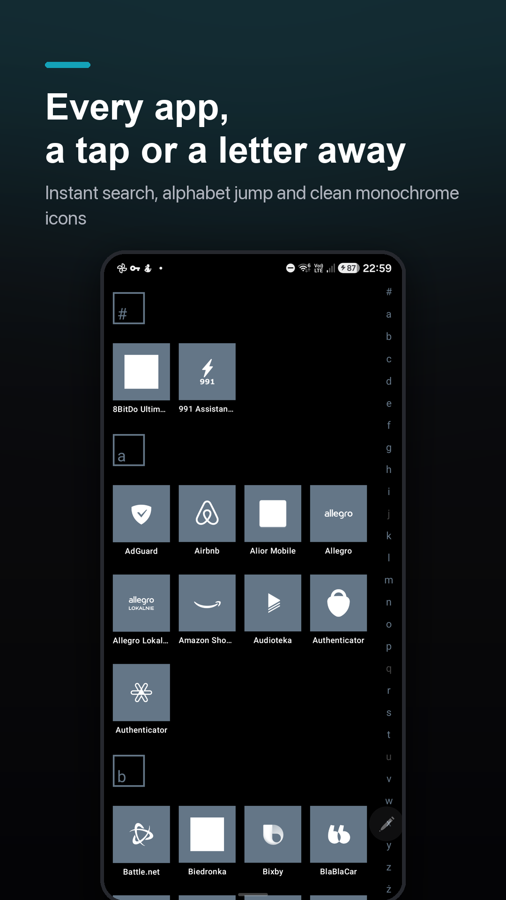

Your home screen, squared away.
sqTile is a local-first Android launcher built around square tiles. Your calendar, reminders, habits and unread badges live on one calm grid — and every bit of it stays on your device.
In closed testing right now — the Play Store page opens for registered testers only. Public release is a couple of weeks away; subscribe and I'll email you when it's live.





A launcher that does the small things properly.
Most launchers are either a wall of icons or a subscription with a dashboard. sqTile sits in between: a tidy grid that actually tells you something, and nothing that phones home.
Square tiles, real information
Every tile is a square you can resize and recolour. Apps, shortcuts, weather, your next event, a habit streak — laid out on one predictable grid.
Badges that come from your notifications
Grant notification access and tiles show unread counts. Notification content is read for the badge and never stored or transmitted.
To-dos, reminders and habits built in
Capture something from the home screen and it schedules an on-device reminder. No second app, no sync service, no sign-up.
Local-first by architecture
There is no server of mine to send your data to. Layout, tasks and settings live in the app's private storage; back them up to a file you control.
Every dependency has to earn its place
Libraries get picked for what they cost in download size and RAM, not for convenience. A launcher runs all day — it has no business being the heaviest thing on your phone.
Benchmarked every release
Each build is measured before it ships. If a number moves the wrong way, the next thing I work on is finding what slowed it down — not the next feature.
Built for people who want their phone to be quiet.
sqTile is not trying to be every launcher for everyone. It's aimed at a specific kind of user — and everything on the backlog is judged against that.
The intentional phone user
Wants a home screen that shows what matters today, not 40 icons and a news feed.
The privacy-minded
Reads permission lists. Prefers on-device processing and no account over convenience.
Tinkerers & customisers
Enjoys arranging a grid until it's exactly right, and wants export/import to keep it.
Light task-manager users
Needs to-dos, reminders and habits close at hand — without adopting a whole system.
Just landed, and what's next.
Shipped in small updates rather than big releases. Keep the app updated — or subscribe and I'll tell you when each of these lands.
Parallax wallpaper behind the tiles
Your wallpaper shifts as you scroll, so the grid sits on top of it instead of hiding it.
Rotating gallery tile
A tile that cycles through your photos with a slow Ken Burns pan and zoom.
Custom colour picker
Add up to ten colours of your own on top of the built-in accents — the grid is yours to match.
Tile folders
Group related apps into a single tile that expands in place, without leaving the grid.
Multiple home pages
Swipe between separate grids — one for work, one for downtime, one for everything else.
Home screen widget for habits
A streak view that stays visible on any launcher, not just sqTile.